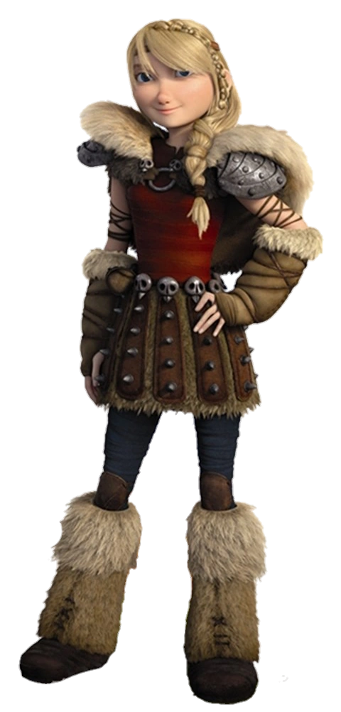

Guerrière d'élite de Beurk, dresseuse d'Éclair
| Rôle | Guerrière, Draconnière |
| Affiliation | Tribu de Beurk |
| Dragon | Éclair (Dragon Vipère) |
| Arme | Hache de combat |
| Particularité | Meilleure guerrière de sa génération |
Astrid Hofferson est la guerrière la plus déterminée de Beurk. Droite, fière et redoutablement efficace au combat, elle était d'abord méfiante vis-à-vis du lien entre Harold et Krokmou, mais elle finit par adopter les mêmes idéaux. Son Dragon Vipère Éclair partage son tempérament intrépide.
Astrid est le pilier moral et guerrier de l'équipe des Dragonniers. Sa maîtrise du combat à la hache, combinée à son talent de dresseuse, en fait une alliée irremplaçable. Elle est également la compagne de Harold tout au long de leurs aventures.